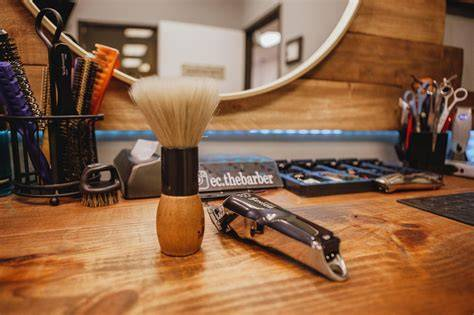

Mis Citas
Menu
Historia
Contactos
Estado de Mexico

FadeMasters
Cortes clásicos y modernos para caballeros. Estilo, precisión y tradición en cada visita.
Av. Barberia Fade Masters, Casi esquina con, Bosques del estado de México, C. Bosques de Tabasco, 55764 Méx.
⭐ ⭐ ⭐ ⭐ Costo General:100$
Ver cupos